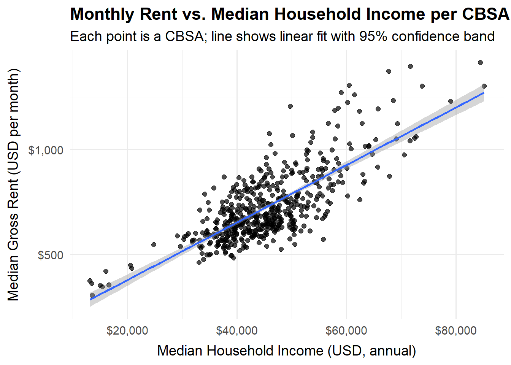
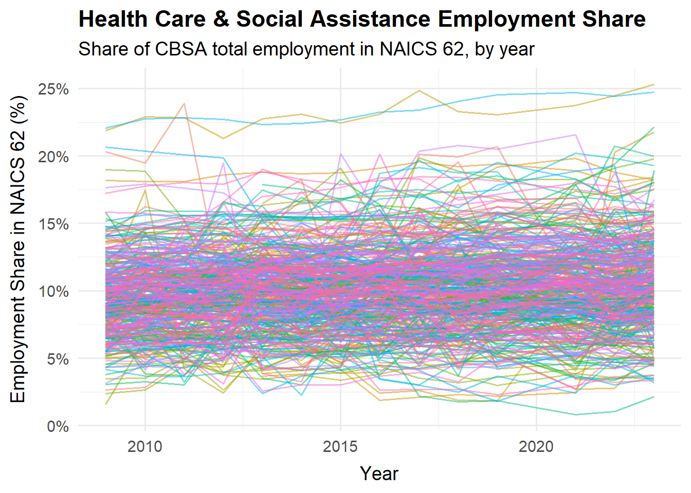
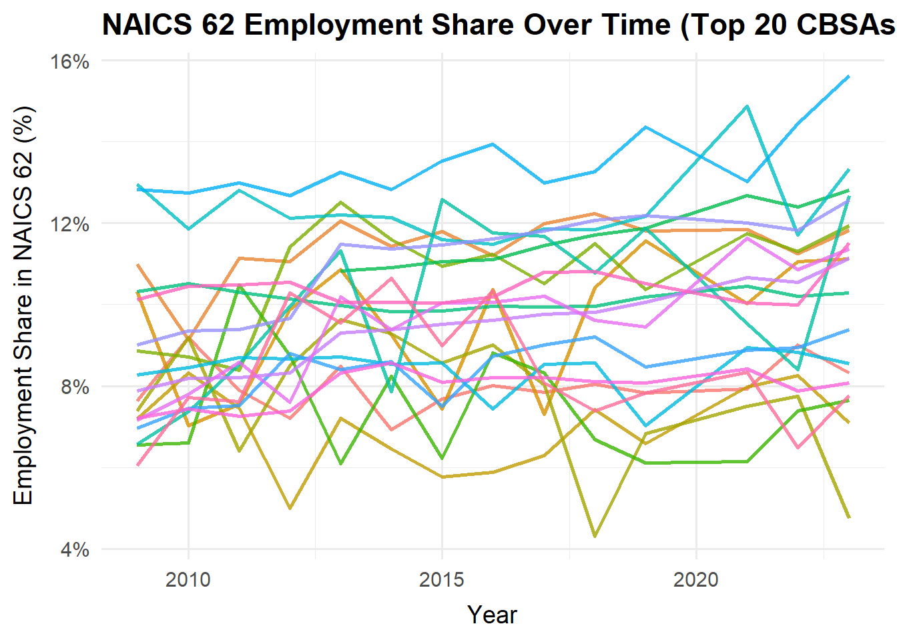
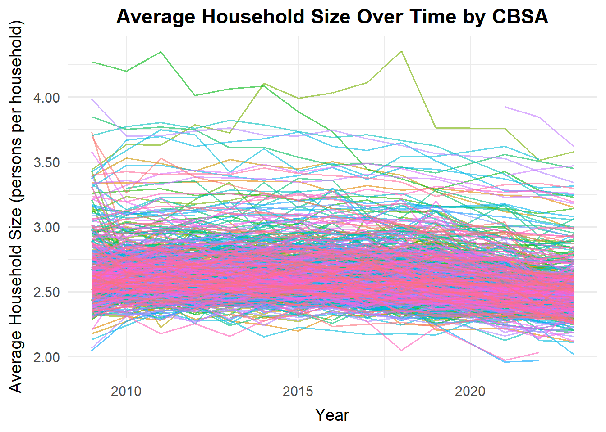
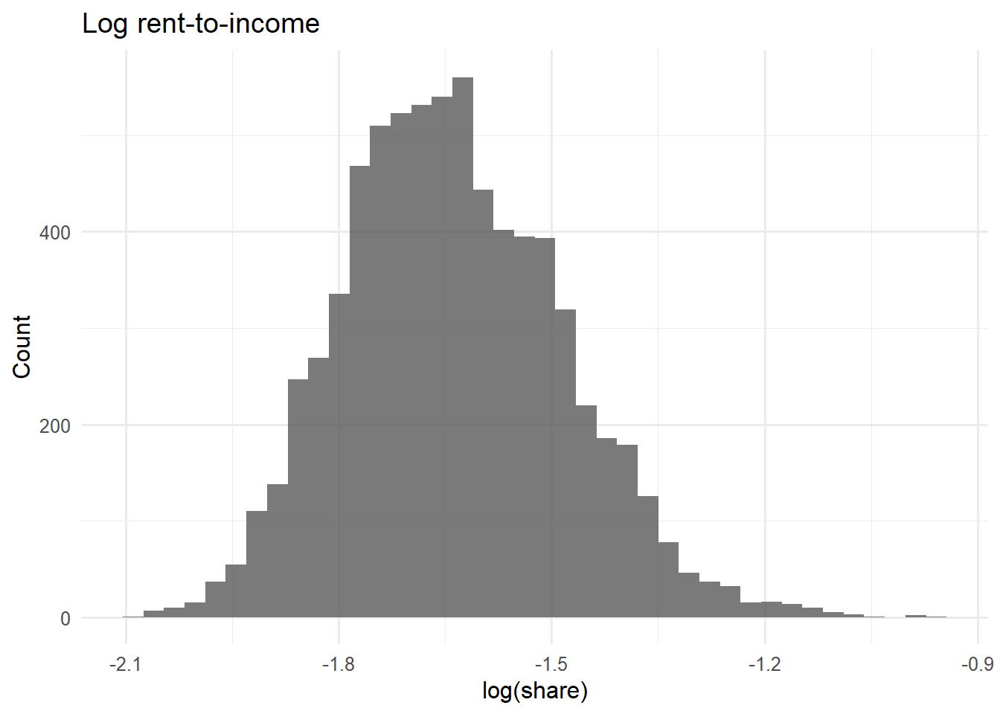
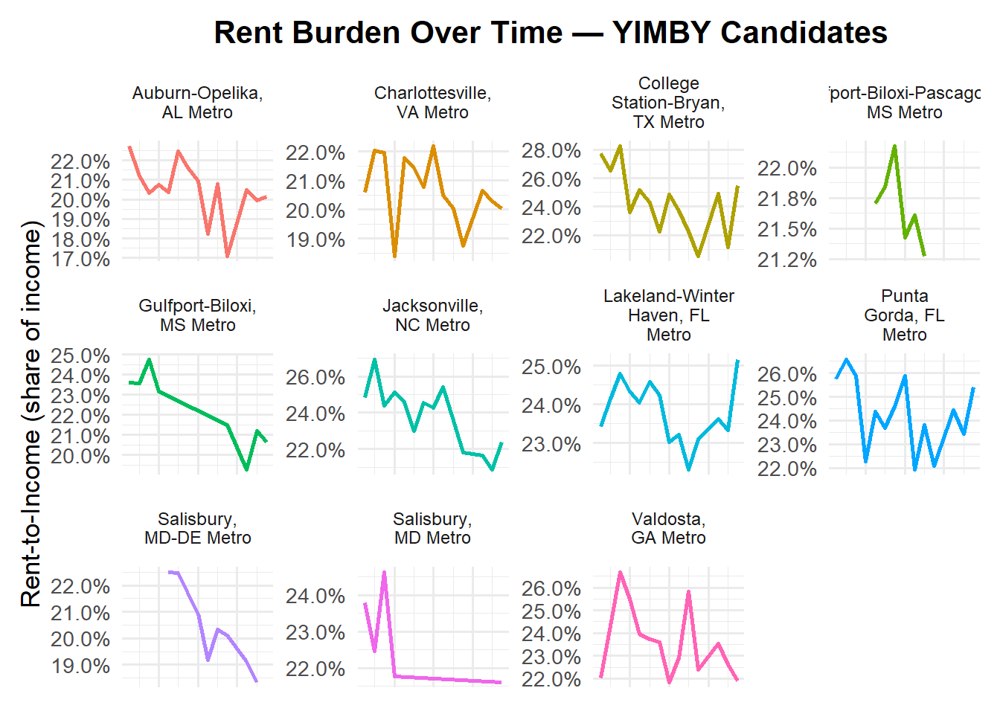
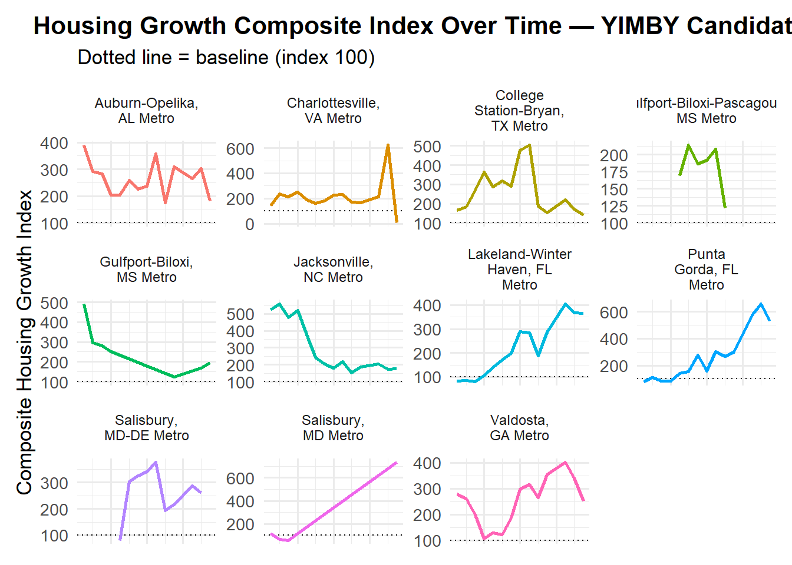

Primary Sponsor: Representative from Salisbury, MD–DE Co-Sponsor: Representative from New York–Newark–Jersey City, NY–NJ–PA
Why This Bill Matters
Across the country, rising rents are straining families and shrinking local economies. By combining metrics of rent burden (how much income goes to rent) and housing growth (how much new housing gets built), we can identify and reward cities that are making measurable progress toward affordability.
This bill empowers cities that are large and small to grow responsibly by aligning incentives with results.
Rent Burden Index (RBI): Measures how much of a typical household’s income goes to rent. Baseline set to 100 = national average in 2009.
Housing Growth Index (HGI): Measures new housing permits relative to population and population growth (5-year lookback). Baseline set to 100 = national average.
Together, these metrics reveal which areas are effectively easing rent pressure through sustained construction rather than economic decline.
Code
# All librarieslibrary(tidyverse)library(glue)library(readxl)library(tidycensus)library(dplyr)library(DT)library(scales)library(ggplot2)library(stringr)library(tidyr)library(readr)library(knitr)# Salisbury & NYC: Health Care (NAICS 62) and Construction (NAICS 23) employment (latest year)fname <-"data/mp02/sponsor_emp_targets.csv"if (!file.exists(fname)) {# Map BLS "C1234" -> Census "12340" WAGES_joined <- WAGES |>mutate(CBSA =paste0(as.double(str_remove(FIPS, "^\\D+")), "0"),CBSA =as.character(CBSA) )# Only the two target CBSAs target_cbsas <-c("35620", "41540") emp_targets <- WAGES_joined |>filter(INDUSTRY %in%c(23, 62), CBSA %in% target_cbsas) |>group_by(CBSA, INDUSTRY) |>summarize(employment =sum(EMPLOYMENT, na.rm =TRUE), .groups ="drop") |>pivot_wider(names_from = INDUSTRY, values_from = employment,names_prefix ="NAICS_", values_fill =0 ) |>mutate(NAME =case_when( CBSA =="35620"~"New York-Newark-Jersey City, NY-NJ-PA Metro Area", CBSA =="41540"~"Salisbury, MD-DE Metro Area",TRUE~NA_character_ ),NAME =trimws(NAME) ) |>rename(health_care_emp = NAICS_62,construction_emp = NAICS_23 ) sponsor_emp <- emp_targets |>transmute(`CBSA Code`= CBSA,`CBSA Name`= NAME,`Health Care Employment (NAICS 62)`= health_care_emp,`Construction Employment (NAICS 23)`= construction_emp )write.csv(sponsor_emp, fname, row.names =FALSE)} else { sponsor_emp <-read_csv(fname, show_col_types =FALSE)}sponsor_emp |>mutate(`Health Care Employment (NAICS 62)`=comma(`Health Care Employment (NAICS 62)`),`Construction Employment (NAICS 23)`=comma(`Construction Employment (NAICS 23)`) ) |>kable(caption ="Table 1: Healthcare & Construction Employment — Salisbury and NYC (Latest QCEW Year)")
Table 1: Healthcare & Construction Employment — Salisbury and NYC (Latest QCEW Year)
CBSA Code
CBSA Name
Health Care Employment (NAICS 62)
Construction Employment (NAICS 23)
35620
New York-Newark-Jersey City, NY-NJ-PA Metro Area
19,950,047
4,485,598
41540
Salisbury, MD-DE Metro Area
254,109
91,313
Who Benefits: Key Supporters
Health Care & Social Assistance Workers (NAICS 62)
Why it matters: Hospitals, clinics, and nursing facilities depend on affordable housing to attract and retain staff.
Why they’ll support it: When rent burden drops, nurses, technicians, and caregivers can live near work—reducing turnover and burnout.
Salisbury & NYC connection: Both metros have significant healthcare workforces in proportion to their total population. Improved affordability directly boosts health service stability.
Construction & Building Trades (NAICS 23)
Why it matters: These are the workers who build the needed housing—carpenters, electricians, plumbers, and supervisors.
Why they’ll support it: Stronger permitting pipelines mean steadier employment, safer worksites, and growth in apprenticeships.
Salisbury & NYC connection: In both regions, construction trades are among the top local employers in proportion to their populations. Predictable, long-term housing initiatives strengthen local job markets.
Policy Strategy
Encourage building-friendly metros. Cities that consistently issue housing permits at above-average rates will receive targeted grants and technical support.
Track progress over time. Use the Rent Burden Index to confirm whether new supply is easing affordability pressures.
Reward measurable success. Metros that show declining rent burdens and sustained housing growth will gain access to fast-tracked infrastructure and planning incentives.
Appendix
Data Acquisition
Census data was obtained from the tidycensus package based on data from the US Census Bureau’s American Community Survey (ACS) which monitors a variety of household demographic and economic indicators constantly.
Code
if (!dir.exists(file.path("data", "mp02"))) {dir.create(file.path("data", "mp02"), showWarnings =FALSE, recursive =TRUE)}library <-function(pkg) {## Mask base::library() to automatically install packages if needed## Masking is important here so downlit picks up packages and links## to documentation pkg <-as.character(substitute(pkg))options(repos =c(CRAN ="https://cloud.r-project.org"))if (!require(pkg, character.only =TRUE, quietly =TRUE)) install.packages(pkg)stopifnot(require(pkg, character.only =TRUE, quietly =TRUE))}get_acs_all_years <-function(variable, geography ="cbsa",start_year =2009, end_year =2023) { fname <-glue("{variable}_{geography}_{start_year}_{end_year}.csv") fname <-file.path("data", "mp02", fname)if (!file.exists(fname)) { YEARS <-seq(start_year, end_year) YEARS <- YEARS[YEARS !=2020] # Drop 2020 - No survey (covid) ALL_DATA <-map(YEARS, function(yy) { tidycensus::get_acs(geography, variable, year = yy, survey ="acs1") |>mutate(year = yy) |>select(-moe, -variable) |>rename(!!variable := estimate) }) |>bind_rows()write_csv(ALL_DATA, fname) }read_csv(fname, show_col_types =FALSE)}# Household income (12 month)INCOME <-get_acs_all_years("B19013_001") |>rename(household_income =`B19013_001`)# Monthly rentRENT <-get_acs_all_years("B25064_001") |>rename(monthly_rent =`B25064_001`)# Total populationPOPULATION <-get_acs_all_years("B01003_001") |>rename(population =`B01003_001`)# Total number of householdsHOUSEHOLDS <-get_acs_all_years("B11001_001") |>rename(households =`B11001_001`)
The number of new housing units built each year was downloaded manually from the US Census Website.
The North American Industry Classification System (NAICS) data schema was downloaded from the US Bureau of Labor Statistics (BLS) and manipulated for easier analysis.
Code
library(httr2)library(rvest)get_bls_industry_codes <-function() { fname <-file.path("data", "mp02", "bls_industry_codes.csv")library(dplyr)library(tidyr)library(readr)if (!file.exists(fname)) { resp <-request("https://www.bls.gov") |>req_url_path("cew", "classifications", "industry", "industry-titles.htm") |>req_headers(`User-Agent`="Mozilla/5.0 (Macintosh; Intel Mac OS X 10.15; rv:143.0) Gecko/20100101 Firefox/143.0") |>req_error(is_error = \(resp) FALSE) |>req_perform()resp_check_status(resp) naics_table <-resp_body_html(resp) |>html_element("#naics_titles") |>html_table() |>mutate(title =str_trim(str_remove(str_remove(`Industry Title`, Code), "NAICS"))) |>select(-`Industry Title`) |>mutate(depth =if_else(nchar(Code) <=5, nchar(Code) -1, NA)) |>filter(!is.na(depth))# These were looked up manually on bls.gov after finding# they were presented as ranges. Since there are only three# it was easier to manually handle than to special-case everything else naics_missing <- tibble::tribble(~Code, ~title, ~depth,"31", "Manufacturing", 1,"32", "Manufacturing", 1,"33", "Manufacturing", 1,"44", "Retail", 1,"45", "Retail", 1,"48", "Transportation and Warehousing", 1,"49", "Transportation and Warehousing", 1 ) naics_table <-bind_rows(naics_table, naics_missing) naics_table <- naics_table |>filter(depth ==4) |>rename(level4_title = title) |>mutate(level1_code =str_sub(Code, end =2),level2_code =str_sub(Code, end =3),level3_code =str_sub(Code, end =4) ) |>left_join(naics_table, join_by(level1_code == Code)) |>rename(level1_title = title) |>left_join(naics_table, join_by(level2_code == Code)) |>rename(level2_title = title) |>left_join(naics_table, join_by(level3_code == Code)) |>rename(level3_title = title) |>select(-starts_with("depth")) |>rename(level4_code = Code) |>select( level1_title, level2_title, level3_title, level4_title, level1_code, level2_code, level3_code, level4_code ) |>drop_na() |>mutate(across(contains("code"), as.integer))write_csv(naics_table, fname) }read_csv(fname, show_col_types =FALSE)}INDUSTRY_CODES <-get_bls_industry_codes()
Lastly, the BLS Quarterly Census of Employment and Wages was downloaded from its website as well.
Code
library(httr2)library(rvest)get_bls_qcew_annual_averages <-function(start_year =2009, end_year =2023) { fname <-glue("bls_qcew_{start_year}_{end_year}.csv.gz") fname <-file.path("data", "mp02", fname) YEARS <-seq(start_year, end_year) YEARS <- YEARS[YEARS !=2020] # Drop Covid year to match ACSif (!file.exists(fname)) { ALL_DATA <-map(YEARS, .progress =TRUE, possibly(function(yy) { fname_inner <-file.path("data", "mp02", glue("{yy}_qcew_annual_singlefile.zip"))if (!file.exists(fname_inner)) {request("https://www.bls.gov") |>req_url_path("cew", "data", "files", yy, "csv",glue("{yy}_annual_singlefile.zip") ) |>req_headers(`User-Agent`="Mozilla/5.0 (Macintosh; Intel Mac OS X 10.15; rv:143.0) Gecko/20100101 Firefox/143.0") |>req_retry(max_tries =5) |>req_perform(fname_inner) }if (file.info(fname_inner)$size <755e5) {warning(sQuote(fname_inner), "appears corrupted. Please delete and retry this step.") }read_csv(fname_inner,show_col_types =FALSE ) |>mutate(YEAR = yy) |>select(`area_fips`,`industry_code`,`annual_avg_emplvl`,`total_annual_wages`,`YEAR` ) |>filter(nchar(industry_code) <=5,str_starts(area_fips, "C") ) |>filter(str_detect(industry_code, "-", negate =TRUE)) |>mutate(FIPS = area_fips,INDUSTRY =as.integer(industry_code),EMPLOYMENT =as.integer(annual_avg_emplvl),TOTAL_WAGES = total_annual_wages ) |>select(-`area_fips`,-`industry_code`,-`annual_avg_emplvl`,-`total_annual_wages` ) |># 10 is a special value: "all industries" , so omitfilter(INDUSTRY !=10) |>mutate(AVG_WAGE = TOTAL_WAGES / EMPLOYMENT) })) |>bind_rows()write_csv(ALL_DATA, fname) } ALL_DATA <-read_csv(fname, show_col_types =FALSE) ALL_DATA_YEARS <-unique(ALL_DATA$YEAR) YEARS_DIFF <-setdiff(YEARS, ALL_DATA_YEARS)if (length(YEARS_DIFF) >0) {stop("Download failed for the following years: ", YEARS_DIFF,". Please delete intermediate files and try again." ) } ALL_DATA}WAGES <-get_bls_qcew_annual_averages()
Initial Exploration
The dplyr package and table joins were are to explore the data. The following are some key findings:
The CBSA population and permits data are joined to see when the largest number of housing units were permitted from 2010-2019.
Code
# Librarieslibrary(tidyverse)library(scales)library(knitr)# Which CBSA permitted the largest number of new housing units, 2010–2019 (inclusive)?fname <-"data/mp02/top_cbsa_2010_2019.csv"if (!file.exists(fname)) { cbsa_names <- POPULATION |>distinct(GEOID, NAME) |>mutate(CBSA =as.integer(GEOID)) |>select(CBSA, NAME) top_cbsa <- PERMITS |>filter(year >=2010, year <=2019) |>group_by(CBSA) |>summarize(`New Housing Units (2010–2019)`=sum(new_housing_units_permitted, na.rm =TRUE),.groups ="drop" ) |>left_join(cbsa_names, by ="CBSA") |>arrange(desc(`New Housing Units (2010–2019)`)) |>slice_head(n =1) |>transmute(`Years`="2010–2019",`CBSA Name`= NAME,`New Housing Units (2010–2019)` )# Create tablewrite.csv(top_cbsa, fname, row.names =FALSE)} else { top_cbsa <-read_csv(fname, show_col_types =FALSE)}top_cbsa |>mutate(`New Housing Units (2010–2019)`=comma(`New Housing Units (2010–2019)`)) |>kable(caption ="Table 2: CBSA with Most New Housing Units Permitted, 2010–2019 (Inclusive)")
Table 2: CBSA with Most New Housing Units Permitted, 2010–2019 (Inclusive)
CBSA Name
New Housing Units (2010–2019)
Houston-Sugar Land-Baytown, TX Metro Area
482,075
The year Albuquerque, NM (CBSA Number 10740) permit the most new housing units. Something to note is that 2020 shows an unrealistically high “New Housing Units” value compared with neighboring years and this was taken into account.
Table 3: Year with Most New Housing Units Permitted — Albuquerque, NM (CBSA 10740)
CBSA Name
Year
New Housing Units
Albuquerque, NM Metro Area
2021
4,021
The state (not CBSA) that had the highest average individual income in 2015. The total income per CBSA was found by multiplying the average household income by the number of households, and then sum total income and total population across all CBSAs in a state.
Code
# Which state had the highest average individual income in 2015?fname <-"data/mp02/state_highest_avg_individual_income_2015.csv"if (!file.exists(fname)) {# Filter for 2015 and keep needed cols INCOME_2015 <- INCOME |>filter(year ==2015) |>select(`GEOID`, `NAME`, `year`, `household_income`) HOUSEHOLDS_2015 <- HOUSEHOLDS |>filter(year ==2015) |>select(`GEOID`, `year`, `households`) POPULATION_2015 <- POPULATION |>filter(year ==2015) |>select(`GEOID`, `year`, `population`)# Join 2015 data and compute total income per CBSA CBSA_2015 <- INCOME_2015 |>left_join(HOUSEHOLDS_2015, by =c("GEOID", "year")) |>left_join(POPULATION_2015, by =c("GEOID", "year")) |>mutate(state =str_extract(NAME, ", (.{2})", group =1), # principal state from nametotal_income_cbsa = household_income * households # avg hh income * number of households ) |>select(`GEOID`, `NAME`, `state`, `population`, `total_income_cbsa`)# State abbreviation = full name mapping state_df <-data.frame(abb =c(state.abb, "DC", "PR"),name =c(state.name, "District of Columbia", "Puerto Rico"),stringsAsFactors =FALSE )# Aggregate to state, compute average individual income, pick top state state_2015 <- CBSA_2015 |>group_by(state) |>summarize(total_income =sum(total_income_cbsa, na.rm =TRUE),total_population =sum(population, na.rm =TRUE),.groups ="drop" ) |>mutate(`Average Individual Income (2015)`= total_income / total_population) |>left_join(state_df, by =c("state"="abb")) |>arrange(desc(`Average Individual Income (2015)`)) |>slice_head(n =1) |>transmute(Year =2015,`State`= name,`State Abbrev`= state,`Average Individual Income (2015)` )write.csv(state_2015, fname, row.names =FALSE)} else { state_2015 <-read_csv(fname, show_col_types =FALSE)}state_2015 |>mutate(`Average Individual Income (2015)`=dollar(`Average Individual Income (2015)`)) |>kable(caption ="Table 4: State with Highest Average Individual Income in 2015")
Table 4: State with Highest Average Individual Income in 2015
Year
State
State Abbrev
Average Individual Income (2015)
2015
District of Columbia
DC
$33,232.88
The last year in which the NYC CBSA had the most data scientists in the country (NAICS code 5182). The BLS CBSA codes (e.g., “C1234”) are cleaned and reformatted so they matched the Census format (“12340”) by removing the “C,” converting to a numeric type, and appending a zero. Then this new column to join the BLS and Census tables, allowing to identify which CBSA had the most data scientists each year.
Code
# According to NAICS 5182 (data scientists & related) employment, which CBSA leads each year?# And in what year did the NYC CBSA last lead? (Files: WAGES, POPULATION)fname <-"naics5182_cbsa_leaders.csv"if (!file.exists(fname)) {# Build join key on the BLS table WAGES_joined <- WAGES |>mutate(CBSA_JOIN =paste0(as.double(str_remove(FIPS, "^\\D+")), "0"),CBSA_JOIN =as.character(CBSA_JOIN) )# Ensure compatible join types in POPULATION (GEOID as character; year as integer) POP_JOIN <- POPULATION |>mutate(GEOID =as.character(as.integer(GEOID)),year =as.integer(year) )# Filter to NAICS 5182 and aggregate employment by CBSA & year cbsa_year_empl <- WAGES_joined |>filter(INDUSTRY ==5182) |>group_by(YEAR, CBSA_JOIN) |>summarize(employment_5182 =sum(EMPLOYMENT, na.rm =TRUE), .groups ="drop")# Join to POPULATION (Census) with explicit join_by keys merged <- cbsa_year_empl |>inner_join( POP_JOIN,join_by(YEAR == year, CBSA_JOIN == GEOID) )# For each year, keep the CBSA with the maximum 5182 employment leaders_by_year <- merged |>group_by(YEAR) |>slice_max(employment_5182, n =1, with_ties =FALSE) |>ungroup() |>transmute(year = YEAR,CBSA = CBSA_JOIN, # matches POPULATION$GEOID after conversion NAME, employment_5182 )write.csv(leaders_by_year, fname, row.names =FALSE)} else { leaders_by_year <-read_csv(fname, show_col_types =FALSE)}# Display as kable with captionleaders_by_year |>rename(`Year`= year,`CBSA Code`= CBSA,`CBSA Name`= NAME,`NAICS 5182 Employment`= employment_5182 ) |>kable(caption ="Table 5: CBSA with the Most NAICS 5182 Employment by Year")
Table 5: CBSA with the Most NAICS 5182 Employment by Year
Year
CBSA Code
CBSA Name
NAICS 5182 Employment
2009
35620
New York-Northern New Jersey-Long Island, NY-NJ-PA Metro Area
16349
2010
19100
Dallas-Fort Worth-Arlington, TX Metro Area
13238
2011
19100
Dallas-Fort Worth-Arlington, TX Metro Area
13283
2012
35620
New York-Northern New Jersey-Long Island, NY-NJ-PA Metro Area
New York–Newark–Jersey City (CBSA 35620) last had the most data scientists (NAICS 5182) in 2015.
The fraction of total wages in NYC CBSA earned by people employed in finance and insurance industries (NAICS code 52) and the year this peaked.
Code
# What fraction of total wages in the NYC CBSA was earned by workers in Finance & Insurance (NAICS 52)?# In what year did this fraction peak? (Files/objects used: WAGES, POPULATION, INDUSTRY_CODES)fname <-"nyc_finance_wage_share.csv"if (!file.exists(fname)) {# Build join key on the BLS table: "C1234" -> "12340" WAGES_joined <- WAGES |>mutate(CBSA_JOIN =paste0(as.double(str_remove(FIPS, "^\\D+")), "0"),CBSA_JOIN =as.character(CBSA_JOIN) )# NYC only WAGES_nyc <- WAGES_joined |>filter(CBSA_JOIN =="35620")# Finance & Insurance = NAICS starting with 52 WAGES_nyc_fin <- WAGES_nyc |>filter(str_detect(as.character(INDUSTRY), "^52($|\\d+)"))# Aggregate with ungroup() (no .groups = "drop") nyc_total_wages_by_year <- WAGES_nyc |>group_by(YEAR) |>summarize(total_wages =sum(TOTAL_WAGES, na.rm =TRUE)) |>ungroup() nyc_fin_wages_by_year <- WAGES_nyc_fin |>group_by(YEAR) |>summarize(finance_wages =sum(TOTAL_WAGES, na.rm =TRUE)) |>ungroup()# Combine, compute share, keep only requested columns nyc_finance_share <- nyc_total_wages_by_year |>inner_join(nyc_fin_wages_by_year, by ="YEAR") |>mutate(finance_wage_share = finance_wages / total_wages) |>arrange(YEAR) |>select(YEAR, total_wages, finance_wage_share)write.csv(nyc_finance_share, fname, row.names =FALSE)} else { nyc_finance_share <-read_csv(fname, show_col_types =FALSE)}# Display with only the requested columns, formatted:nyc_finance_share |>transmute(Year = YEAR,`Total Wages (Trillions)`=dollar(total_wages, scale =1e-12),`Finance & Insurance Wage Share`=percent(finance_wage_share, accuracy =0.01) ) |>kable(caption ="Table 6: Total Wages and Finance & Insurance Wage Share by Year for NYC (CBSA 35620)")
Table 6: Total Wages and Finance & Insurance Wage Share by Year for NYC (CBSA 35620)
Year
Total Wages (Trillions)
Finance & Insurance Wage Share
2009
$2.19
9.40%
2010
$2.37
15.38%
2011
$2.45
13.76%
2012
$2.54
14.20%
2013
$2.66
11.90%
2014
$2.59
14.25%
2015
$3.01
12.74%
2016
$3.04
11.59%
2017
$3.18
13.74%
2018
$3.20
13.43%
2019
$3.62
13.53%
2021
$3.64
15.87%
2022
$4.10
13.63%
2023
$4.16
11.96%
Code
# Find the peak year (highest Finance & Insurance wage share) for NYCpeak_row <- nyc_finance_share |>ungroup() |>slice_max(finance_wage_share, n =1, with_ties =FALSE)peak_year <- peak_row$YEAR[1]peak_share <- peak_row$finance_wage_share[1]
New York–Newark–Jersey City (CBSA 35620) had 15.87% of total wages earned by Finance & Insurance (NAICS 52) and peaked in 2021.
Initial Visualizations
Visualizations were created to formulate a better understanding of the data relationships. The first being the relationship between monthly rent and average household income per CBSA in 2009. A linear relationship is shown by using ggplot2.
Code
# Relationship between monthly rent and average household income per CBSA in 2009# Prepare 2009 dataINCOME_2009 <- INCOME |>filter(year ==2009) |>select(GEOID, year, household_income)HOUSEHOLDS_2009 <- HOUSEHOLDS |>filter(year ==2009) |>select(GEOID, year, households)RENT_2009 <- RENT |>filter(year ==2009) |>select(GEOID, year, monthly_rent)# Join & compute the income measure used in the plot# Here we use MEDIAN household income directly (from B19013_001)rent_vs_income_2009 <- INCOME_2009 |>inner_join(HOUSEHOLDS_2009, by =c("GEOID", "year")) |>mutate(avg_household_income = household_income) |>select(GEOID, year, avg_household_income) |>inner_join(RENT_2009, by =c("GEOID", "year")) |>filter(is.finite(avg_household_income), is.finite(monthly_rent), avg_household_income >0, monthly_rent >0 ) |>ungroup()# Plotggplot( rent_vs_income_2009,aes(x = avg_household_income, y = monthly_rent)) +geom_point(alpha =0.7, size =2) +geom_smooth(method ="lm", se =TRUE, linewidth =0.9) +scale_x_continuous(labels =dollar_format(accuracy =1000)) +scale_y_continuous(labels =dollar_format(accuracy =10)) +labs(title ="Monthly Rent vs. Median Household Income per CBSA (2009)",subtitle ="Each point is a CBSA; line shows linear fit with 95% confidence band",x ="Median Household Income (USD, annual)",y ="Median Gross Rent (USD per month)" ) +theme_minimal(base_size =14) +theme(plot.title =element_text(face ="bold"),axis.title.x =element_text(margin =margin(t =8)),axis.title.y =element_text(margin =margin(r =8)) )

This visualization shows the relationship between total employment and total employment in the health care and social services sector (NAICS 62) across different CBSAs. It is designed to show the evolution of over time. The x-axis shows the year and the y-axis is the % of total employment in NAICS 62.
Code
# Share of employment in Health Care & Social Assistance (NAICS 62) over time# Prep: build CBSA key "C1234" -> "12340"WAGES_joined <- WAGES |>mutate(CBSA_JOIN =paste0(as.double(str_remove(FIPS, "^\\D+")), "0"),CBSA_JOIN =as.character(CBSA_JOIN) )# Aggregate total employment by CBSA-yeartotal_emp_cbsa_year <- WAGES_joined |>group_by(YEAR, CBSA_JOIN) |>summarize(total_employment =sum(EMPLOYMENT, na.rm =TRUE)) |>ungroup()# Aggregate NAICS 62 employment by CBSA-yearemp62_cbsa_year <- WAGES_joined |>filter(str_detect(as.character(INDUSTRY), "^62($|\\d+)")) |>group_by(YEAR, CBSA_JOIN) |>summarize(emp_naics62 =sum(EMPLOYMENT, na.rm =TRUE)) |>ungroup()# Compute share (NAICS 62 / Total) by CBSA-yearshare62_over_time <- total_emp_cbsa_year |>inner_join(emp62_cbsa_year, by =c("YEAR", "CBSA_JOIN")) |>mutate(share_62 = emp_naics62 / total_employment) |>arrange(CBSA_JOIN, YEAR) |>ungroup()# Plot: time on x, % on y; one line per CBSAggplot( share62_over_time,aes(x = YEAR, y = share_62, group = CBSA_JOIN, color = CBSA_JOIN)) +geom_line(alpha =0.5, linewidth =0.7) +guides(color ="none") +# hide legend (too many CBSAs)scale_x_continuous(breaks =pretty_breaks()) +scale_y_continuous(labels =percent_format(accuracy =1)) +labs(title ="Health Care & Social Assistance Employment Share",subtitle ="Share of CBSA total employment in NAICS 62, by year",x ="Year",y ="Employment Share in NAICS 62 (%)" ) +theme_minimal(base_size =14) +theme(plot.title =element_text(face ="bold"),axis.title.x =element_text(margin =margin(t =8)),axis.title.y =element_text(margin =margin(r =8)) )

To reduce clutter, below is a visualization showing only the top 20 CBSAs by latest toal employment.
Code
# Reduce clutter by showing only the top 20 CBSAs by latest total employmentlatest_year <-max(share62_over_time$YEAR, na.rm =TRUE)top_cbsa <- total_emp_cbsa_year |>filter(YEAR == latest_year) |>slice_max(total_employment, n =20) |>pull(CBSA_JOIN)ggplot(filter(share62_over_time, CBSA_JOIN %in% top_cbsa),aes(x = YEAR, y = share_62, group = CBSA_JOIN, color = CBSA_JOIN)) +geom_line(alpha =0.8, linewidth =0.9) +guides(color ="none") +scale_x_continuous(breaks =pretty_breaks()) +scale_y_continuous(labels =percent_format(accuracy =1)) +labs(title ="NAICS 62 Employment Share Over Time (Top 20 CBSAs)",x ="Year",y ="Employment Share in NAICS 62 (%)" ) +theme_minimal(base_size =14) +theme(plot.title =element_text(face ="bold"),axis.title.x =element_text(margin =margin(t =8)),axis.title.y =element_text(margin =margin(r =8)) )

The averages of the total employment in the health care & social services sector (NAICS 62) as a percentage of total employment within the sector over time. This was created as an easier visual to read and interpret. It shows that the average is on an inclining trajectory.
Code
# --- Prep: Build CBSA key ---WAGES_joined <- WAGES |>mutate(CBSA_JOIN =paste0(as.double(str_remove(FIPS, "^\\D+")), "0"),CBSA_JOIN =as.character(CBSA_JOIN) )# --- Total employment by CBSA-year ---total_emp_cbsa_year <- WAGES_joined |>group_by(YEAR, CBSA_JOIN) |>summarize(total_employment =sum(EMPLOYMENT, na.rm =TRUE)) |>ungroup()# --- Health Care & Social Assistance (NAICS 62) employment ---emp62_cbsa_year <- WAGES_joined |>filter(str_detect(as.character(INDUSTRY), "^62($|\\d+)")) |>group_by(YEAR, CBSA_JOIN) |>summarize(emp_naics62 =sum(EMPLOYMENT, na.rm =TRUE)) |>ungroup()# --- Compute share and then average across CBSAs for each year ---share62_yearly_avg <- total_emp_cbsa_year |>inner_join(emp62_cbsa_year, by =c("YEAR", "CBSA_JOIN")) |>mutate(share_62 = emp_naics62 / total_employment) |>group_by(YEAR) |>summarize(avg_share_62 =mean(share_62, na.rm =TRUE)) |>ungroup()# --- Plot: average share over time ---ggplot(share62_yearly_avg, aes(x = YEAR, y = avg_share_62)) +geom_line(color ="#2C3E50", linewidth =1.2) +geom_point(size =2, color ="#2C3E50") +scale_x_continuous(breaks =pretty_breaks()) +scale_y_continuous(labels =percent_format(accuracy =0.1)) +labs(title ="Average Share of Employment in Health Care\n& Social Assistance (NAICS 62)",subtitle ="Average across all CBSAs, by year",x ="Year",y ="Average Employment Share in NAICS 62 (%)" ) +theme_minimal(base_size =14) +theme(plot.title =element_text(face ="bold", hjust =0.5),axis.title.x =element_text(margin =margin(t =8)),axis.title.y =element_text(margin =margin(r =8)) )
The next visualization is the evolution of average household sizes over time. Each line represents a different CBSA.
Code
# Evolution of average household size over time, with different lines for each CBSA# Compute average household size per CBSA-yearavg_hhsize_cbsa_year <- POPULATION |>select(GEOID, NAME, year, population) |>inner_join( HOUSEHOLDS |>select(GEOID, year, households),by =c("GEOID", "year") ) |>mutate(avg_household_size = population / households) |>arrange(GEOID, year) |>ungroup()# Plot: each CBSA is a separate line over timeggplot( avg_hhsize_cbsa_year,aes(x = year, y = avg_household_size, group = GEOID, color = NAME)) +geom_line(alpha =0.6, linewidth =0.7) +# Large datasets can produce unreadable legends; hide by defaultguides(color ="none") +scale_x_continuous(breaks =pretty_breaks()) +scale_y_continuous(labels =number_format(accuracy =0.01)) +labs(title ="Average Household Size Over Time by CBSA",x ="Year",y ="Average Household Size (persons per household)" ) +theme_minimal(base_size =14) +theme(plot.title =element_text(face ="bold", hjust =0.5),axis.title.x =element_text(margin =margin(t =8)),axis.title.y =element_text(margin =margin(r =8)) )

Building Indices of Housing Affordability and Housing Stock Growth
Rent Burden
After exploring the data, analysis began by combining tables to construct an initial metric of rent affordability. The tables were merged into a single table using join.
First, the INCOME and RENT tables were joined together to construct a suitable measure of rent burden, which is how much of income a typical resident spends on housing.
Next, rent-to-income ratios were calculated and standardized by centering them around the national average in the first year of the study (2009). This was done by defining the 2009 national average as a baseline value (set equal to 100) and scaling each ratio by dividing it by this baseline. As a result, the resulting rent burden index can be interpreted as “k times the baseline,” where values above 100 indicate higher rent burden relative to the 2009 national average.
Code
# INCOME and RENT table joined by CBSA and year, created rent-to-income ratiorent_burden <- RENT |>select(GEOID, NAME, year, monthly_rent) |>inner_join( INCOME |>select(GEOID, year, household_income),by =c("GEOID", "year") ) |>mutate(rent_to_income = (monthly_rent *12) / household_income )# Baseline value definedbaseline <- rent_burden |>filter(year ==min(year)) |>summarize(baseline_mean =mean(rent_to_income, na.rm =TRUE)) |>pull(baseline_mean)# Scaling by dividing the ratio by the baselinerent_burden <- rent_burden |>mutate(rent_burden_index =100* (rent_to_income / baseline) )
A log transformation was considered but deemed unnecessary, as it provided minimal improvement. The untransformed data offered clearer and more interpretable results. The following shows pre-transformation and post-transformation:
Code
# Use your existing table with rent_to_income already computedrb <- rent_burden |>filter(is.finite(rent_to_income), rent_to_income >0) |>ungroup()# 1) Histograms: raw vs logp_raw <-ggplot(rb, aes(rent_to_income)) +geom_histogram(bins =40, alpha =0.8) +scale_x_continuous(labels =percent_format(accuracy =1)) +labs(title ="Raw rent-to-income", x ="Share of income", y ="Count") +theme_minimal(base_size =12)p_log <-ggplot(rb, aes(log(rent_to_income))) +geom_histogram(bins =40, alpha =0.8) +labs(title ="Log rent-to-income", x ="log(share)", y ="Count") +theme_minimal(base_size =12)p_raw
Code
p_log

The DT package was used to create three tables. The first shows how the rent burden has changed over time in the San Francisco–Oakland–Hayward Metro Area. The data for CBSA 41860 are filtered and arranged by year to examine changes in rent burden over time. Key variables, including rent, household income, rent-to-income ratio, and the rent burden index, are displayed in a formatted table to provide a view of trends in housing affordability.
Code
# Rent burden over time (INCOME + RENT joined; San Francisco-Oakland-Hayward Metro = CBSA 41860)# Column titlesformat_titles <-function(df) {colnames(df) <-str_replace_all(colnames(df), "_", " ") |>str_to_title() df}# Table creation using DTsf_dt <- rent_burden |>mutate(GEOID =as.character(GEOID)) |>filter(GEOID =="41860") |>arrange(year) |>select(year, monthly_rent, household_income, rent_to_income, rent_burden_index)sf_dt |>format_titles() |>datatable(caption = htmltools::tags$caption(style ="caption-side: top; text-align: center; font-weight: bold;","Table 7: Rent Burden Over Time — San Francisco–Oakland–Hayward Metro (CBSA 41860)" ),options =list(searching =FALSE, info =FALSE, pageLength =15) ) |>formatCurrency(c("Monthly Rent", "Household Income"), currency ="$", digits =0) |>formatPercentage("Rent To Income", digits =2) |>formatRound("Rent Burden Index", digits =1)
The second highlights the Metro Areas with the highest rent burden. The most recent year available in the dataset is identified and used to filter the rent burden data, retaining only metropolitan areas and relevant variables such as rent, income, and rent-to-income ratios. The data are then sorted by rent-to-income share to highlight the top five metros with the highest rent burden, which are presented in a formatted table for clarity and comparison.
Code
# Most recent year availablelatest_year <-max(rent_burden$year, na.rm =TRUE)# Kept only relevant columns for the latest year and keep only Metro areasrb_latest <- rent_burden |>filter(year == latest_year) |>mutate(NAME =trimws(NAME)) |>filter(!grepl("Micro Area", NAME, ignore.case =TRUE)) |>select( NAME,`CBSA Code`= GEOID, year, monthly_rent, household_income, rent_to_income, rent_burden_index ) |>ungroup()# Highest rent burden (top 5)rb_top5 <- rb_latest |>arrange(desc(rent_to_income)) |>slice_head(n =5)rb_top5 |>format_titles() |>datatable(caption = htmltools::tags$caption(style ="caption-side: top; text-align: center; font-weight: bold;","Table 8: Metro Areas with the Highest Rent Burden" ),options =list(searching =FALSE, info =FALSE, pageLength =20) ) |>formatCurrency(c("Monthly Rent", "Household Income"), currency ="$", digits =0) |>formatPercentage("Rent To Income", digits =2) |>formatRound("Rent Burden Index", digits =1)
The third highlights the Metro Areas with the lowest rent burden. This is done with a similar method as the previous.
Code
# Lowest rent burden (bottom 5)rb_bottom5 <- rb_latest |>arrange(rent_to_income) |>slice_head(n =5)rb_bottom5 |>format_titles() |>datatable(caption = htmltools::tags$caption(style ="caption-side: top; text-align: center; font-weight: bold;","Table 9: Metro Areas with the Lowest Rent Burden" ),options =list(searching =FALSE, info =FALSE, pageLength =20) ) |>formatCurrency(c("Monthly Rent", "Household Income"), currency ="$", digits =0) |>formatPercentage("Rent To Income", digits =2) |>formatRound("Rent Burden Index", digits =1)
Housing Growth
To find the ‘building-friendliness’ of across the metropolitan areas, the CBSAs that permit a large number of new housing units relative to their existing population must be identified. Going one step further, CBSAs where the total number of housing units permitted is growing faster than the population is a even better identifier because they have the greatest chance of being highly affordable.
This depends on a suitable measure of housing growth which is how many new housing units are permitted in a CBSA, relative to both the current number of residents and the overall population growth of that CBSA.
The initial setup is to join together the POPULATION and PERMITS tables and use the dplyr functionality along with the lag function to calculate population growth with a fixed lookback window of 5 years. Since the data begins in 2009, the five-year estimates of population growth begins in 2014.
Code
# Join POPULATION + PERMITShousing_panel <- POPULATION |>mutate(GEOID =as.character(GEOID)) |>select(GEOID, NAME, year, population) |>inner_join( PERMITS |>mutate(CBSA =as.character(CBSA)) |>select(CBSA, year, new_housing_units_permitted),by =c("GEOID"="CBSA", "year"="year") ) |>arrange(GEOID, year) |>group_by(GEOID) |>mutate(# 5-year population growth (first valid in 2014 if series starts 2009)population_lag5 =lag(population, 5),pop_growth_5yr = population - population_lag5 ) |>ungroup()
The metric is then constructed in two parts with the first being an ‘instantaneous’ measure of housing growth that depends on the absolute population of a CBSA and the number of new housing units permitted that year. To do this, the ratio of the number of permits per 1,000 residents is found. Then, a baseline of 100 is created using the national average of the first year of the study (2009) and standardized to the ratio.
Code
# Permits relative to current population ratioinst_metrics <- housing_panel |>mutate(permits_per_1k =1000* new_housing_units_permitted / population ) |>ungroup()# Baseline for instantaneous metric: national average in first year of studyfirst_year_inst <-min(inst_metrics$year, na.rm =TRUE)baseline_inst <- inst_metrics |>filter(year == first_year_inst) |>summarize(baseline =mean(permits_per_1k, na.rm =TRUE)) |>pull(baseline)# Standardizationinst_metrics <- inst_metrics |>mutate(inst_index_100 =100* permits_per_1k / baseline_inst # 100 = national avg in first year ) |>ungroup()
The second part is a ‘rate-based’ measure of housing growth that compares the number of housing permits per 1,000 new residents to the population growth over a 5 year lookback window (as calculated previously). The roll_* functions from the RcppRoll package is used too get a rolling 5-year average.
The following are tables that identify the CBSAs that score particularly high or low on each metric.
Code
# INSTANTANEOUS metric (permits per 1k residents; index=100 in first year)N <-5# how many from each end to showinst_latest <- inst_metrics |>mutate(NAME =trimws(NAME)) |>filter(!grepl("Micro Area", NAME, ignore.case =TRUE)) |>select( NAME, GEOID, year, population, new_housing_units_permitted, permits_per_1k, inst_index_100 ) |>ungroup()# Highest / Lowestinst_top <- inst_latest |>arrange(desc(inst_index_100)) |>slice_head(n = N)inst_bottom <- inst_latest |>arrange(inst_index_100) |>slice_head(n = N)# DT Highestinst_top |>format_titles() |>datatable(caption = htmltools::tags$caption(style ="caption-side: top; text-align: center; font-weight: bold;","Table 10: Highest Scoring CBSAs Using Instantaneous Metric" ),options =list(searching =FALSE, info =FALSE, pageLength = N) ) |>formatRound(c("Permits Per 1k", "Inst Index 100"), digits =1) |>formatRound(c("Population", "New Housing Units Permitted"), digits =0, interval =3, mark =",")
Code
# DT Lowestinst_bottom |>format_titles() |>datatable(caption = htmltools::tags$caption(style ="caption-side: top; text-align: center; font-weight: bold;","Table 11: Lowest Scoring CBSAs Using Instantaneous Metric" ),options =list(searching =FALSE, info =FALSE, pageLength = N) ) |>formatRound(c("Permits Per 1k", "Inst Index 100"), digits =1) |>formatRound(c("Population", "New Housing Units Permitted"), digits =0, interval =3, mark =",")
Code
# B) RATE-BASED metric (permits per 1k NEW residents over last 5 years; index=100 at first valid year)#rate_latest <- rate_metrics |>mutate(NAME =trimws(NAME)) |>filter(!grepl("Micro Area", NAME, ignore.case =TRUE)) |>select( NAME, GEOID, year, population, new_housing_units_permitted, pop_growth_5yr, permits_per_1k_new_res_roll5, rate_index_100 ) |>ungroup()# Highest / Lowest (rate-based)rate_top <- rate_latest |>arrange(desc(rate_index_100)) |>slice_head(n = N)rate_bottom <- rate_latest |>arrange(rate_index_100) |>slice_head(n = N)# DT Highestrate_top |>format_titles() |>datatable(caption = htmltools::tags$caption(style ="caption-side: top; text-align: center; font-weight: bold;","Table 12: Lowest Scoring CBSAs Using Rate-Based Metric" ),options =list(searching =FALSE, info =FALSE, pageLength = N) ) |>formatRound(c("Permits Per 1k New Res Roll5", "Rate Index 100"), digits =1) |>formatRound(c("Population", "New Housing Units Permitted", "Pop Growth 5yr"), digits =0, interval =3, mark =",")
Code
# DT Lowestrate_bottom |>format_titles() |>datatable(caption = htmltools::tags$caption(style ="caption-side: top; text-align: center; font-weight: bold;","Table 13: Lowest Scoring CBSAs Using Rate-Based Metric" ),options =list(searching =FALSE, info =FALSE, pageLength = N) ) |>formatRound(c("Permits Per 1k New Res Roll5", "Rate Index 100"), digits =1) |>formatRound(c("Population", "New Housing Units Permitted", "Pop Growth 5yr"), digits =0, interval =3, mark =",")
The two metrics are combined to develop a composite score index by merging institutional and rate-based housing growth metrics for each CBSA and year. The two standardized indices are averaged to form a single composite score (composite_index_100), providing a balanced measure of overall housing growth performance across regions.
Code
# Combine the two metrics and make a composite (equal-weight average of indices)metrics_all <- inst_metrics |>select(GEOID, NAME, year, population, new_housing_units_permitted, permits_per_1k, inst_index_100) |>inner_join( rate_metrics |>select(GEOID, year, pop_growth_5yr, permits_per_1k_new_res_roll5, rate_index_100),by =c("GEOID", "year") ) |>mutate(composite_index_100 =rowMeans(cbind(inst_index_100, rate_index_100), na.rm =TRUE) ) |>ungroup()
The composite index is standardized to z-scores, and CBSAs with extreme values are flagged using asymmetric thresholds (High if z ≥ 11; Low if z ≤ −14). The resulting high/low outliers for the latest year are compiled into a table to spotlight metros that perform exceptionally well or poorly.
Code
# 4) Tables — identify CBSAs with particularly high/low valuespanel_latest <- metrics_all |>mutate(NAME =trimws(NAME)) |>filter(!grepl("Micro Area", NAME, ignore.case =TRUE)) |>select( NAME,`CBSA Code`= GEOID, year, population, new_housing_units_permitted, pop_growth_5yr, inst_index_100, rate_index_100, composite_index_100 ) |>ungroup()# Compute z-scores for the composite index and flag abnormal values# Threshold can be adjusted; default is |z| >= 2z_thresh_high <-11z_thresh_low <--14abnormal_asym <- panel_latest |>mutate(comp_mean =mean(composite_index_100, na.rm =TRUE),comp_sd =sd(composite_index_100, na.rm =TRUE),comp_z = (composite_index_100 - comp_mean) / comp_sd,abnormal =case_when( comp_z >= z_thresh_high ~"High", comp_z <= z_thresh_low ~"Low",TRUE~NA_character_ ) ) |>filter(!is.na(abnormal)) |>arrange(desc(comp_z)) |>select( abnormal, NAME, `CBSA Code`, year, population, new_housing_units_permitted,`Pop Growth 5yr`= pop_growth_5yr,`Inst Index 100`= inst_index_100,`Rate Index 100`= rate_index_100,`Composite Index 100`= composite_index_100,`Composite Z`= comp_z )# Single DT table with both high and low flagged rowsabnormal_asym |>format_titles() |>datatable(caption = htmltools::tags$caption(style ="caption-side: top; text-align: center; font-weight: bold;","Table 14: Abnormally High/Low Composite" ),options =list(searching =FALSE, info =FALSE, pageLength =50), ) |>formatRound(c("Inst Index 100", "Rate Index 100", "Composite Index 100", "Composite Z"), digits =1) |>formatRound(c("Population", "New Housing Units Permitted", "Pop Growth 5yr"), digits =0, interval =3, mark =",") |>formatStyle("Abnormal",target ="row",backgroundColor =styleEqual(c("High", "Low"), c("#fde0dd", "#e0ecf4")) )
Investigating the Relationship Between Rent Burden and Housing Growth Metrics
The analysis constructs summary measures by CBSA early and late rent burden (and their changes), population growth over the study period, and the average composite housing-growth index. It joins these panels to flag “YIMBY candidates” that meet four criteria (high early rent burden, declining rent burden, positive population growth, and above-average housing growth). Cutoffs are set using the 75th percentile for early rent burden and the overall mean for housing growt and CBSAs satisfying all criteria are labeled as successes. A quadrant-style scatter plot then visualizes housing growth (x) versus change in rent burden (y), with dashed reference lines at the thresholds, point size encoding early rent burden, and color highlighting the flagged YIMBY candidates, zoomed to the 1st–99th percentile range on the x-axis.
Lastly, top nine “YIMBY” CBSAs, those meeting all success criteria, are selected by highest average composite housing-growth index. Time-series panels are prepared for rent burden and the composite index for the top nine. The line charts show each CBSA’s trajectory over time based on rent burden and housing growth.
Code
# Wrap for facet stripswrap_names <-labeller(NAME_CLEAN =label_wrap_gen(width =12))# Pick top 9 YIMBY candidatesK <-9yimby_ids <- yimby_flagged |>filter(yimby_success) |>arrange(desc(comp_idx_avg)) |>slice_head(n = K) |>pull(GEOID)# Time series sourcesrb_ts <- rent_burden_clean |>filter(GEOID %in% yimby_ids)hg_ts <- metrics_all |>filter(GEOID %in% yimby_ids) |>select(GEOID, NAME, year, composite_index_100)# Clean label: "... Metro Area" -> "... Metro"rb_ts2 <- rb_ts |>mutate(NAME_CLEAN =str_replace(NAME, regex("Metro\\s+Area$", ignore_case =TRUE), "Metro") )ggplot(rb_ts2, aes(x = year, y = rent_to_income, group = GEOID, color = NAME_CLEAN)) +geom_line(linewidth =0.9) +facet_wrap(~NAME_CLEAN, scales ="free_y", labeller = wrap_names) +scale_y_continuous(labels =percent_format(accuracy =0.1)) +guides(color ="none") +labs(title ="Rent Burden Over Time — YIMBY Candidates", x =NULL,y ="Rent-to-Income (share of income)" ) +theme_minimal(base_size =13) +theme(plot.title =element_text(face ="bold", hjust =0.5),axis.text.x =element_blank(), # remove yearsaxis.ticks.x =element_blank(),strip.text.x =element_text(size =9, margin =margin(t =6, b =6)),plot.margin =margin(10, 10, 10, 10) )

Code
# ----- B) Housing growth (composite index) -----hg_ts2 <- hg_ts |>mutate(NAME_CLEAN =str_replace(NAME, regex("Metro\\s+Area$", ignore_case =TRUE), "Metro") )ggplot(hg_ts2, aes(x = year, y = composite_index_100, group = GEOID, color = NAME_CLEAN)) +geom_hline(yintercept =100, linetype ="dotted") +geom_line(linewidth =0.9) +facet_wrap(~NAME_CLEAN, scales ="free_y", labeller = wrap_names) +guides(color ="none") +labs(title ="Housing Growth Composite Index Over Time — YIMBY Candidates",subtitle ="Dotted line = baseline (index 100)",x =NULL, y ="Composite Housing Growth Index" ) +theme_minimal(base_size =13) +theme(plot.title =element_text(face ="bold", hjust =0.5),axis.text.x =element_blank(), # remove yearsaxis.ticks.x =element_blank(),strip.text.x =element_text(size =9, margin =margin(t =6, b =6)),plot.margin =margin(10, 10, 10, 10) )

Disclaimer: This analysis is based on publicly available data from the U.S. Census Bureau and the Bureau of Labor Statistics. The results and interpretations presented here are for academic and illustrative purposes only and should not be viewed as definitive measures of housing or economic performance.